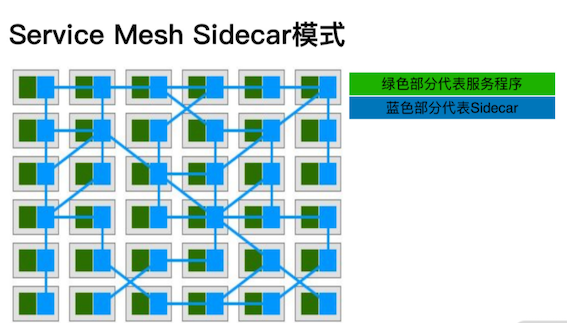

第一节 Service Mesh 学习与架构分析
1、为什么要学习 Service Mesh？
- 微服务在业内的实践已经从流行走向成熟
- 微服务架构使应用程序更易于扩展、更快开发，从而加速创新并缩短新功能的上市时间
- 与单体应用相比，微服务能够更好地满足互联网时代业务快速变化的需要
1-1 微服务架构也不是银弹
Service Mesh （服务网格）是一个用于处理服务和服务之间通信的基础设施层：
通过 sidecar 模式将原本在 SDK 中的代码独立出来，用控制面代替配置中心的部分功能，以透明代理的形式提供安全、快速、可靠的服务间通信，同时也能实现微服务所需的基本组件功能。
你可以把 Service Mesh 看作是分布式的微服务代理。
2、Service Mesh：从单体服务出发，独立于业务演进的微服务架构
2-1 单体服务架构有哪些问题
- 所有的功能模块都在一个代码仓库，并且部署在同一个进程内，是一个典型的单体架构。
- 大量复杂的业务冗杂在一个单体应用中，造成了人员沟通成本和发布迭代成本的急剧上升。
2-2 单体服务的问题
- 人员协作问题
- 部署问题
- 架构演进问题
- 程序稳定性问题
在单体应用中，某个模块出现 Bug 时，比如因为疏忽造成了 OOM (程序内存不足)，导致程序 panic，这会导致整个网站或者 App 不可用。一个模块的问题，导致了整个应用挂掉，这在生产环境中是无法接受的。
随着互联网业务的发展，整体业务越来越复杂，以上问题越来越明显，单体服务已经无法应对如此复杂的业务场景了。互联网行业也从架构上逐步开始了服务拆分，进入了 SOA （Service-Oriented Architecture 面向服务的架构）时代。
2-3 微服务有哪些优势
微服务是一种开发软件的架构和组织方法，其中软件由通过明确定义的 API 进行通信的小型独立服务组成，这些服务由各个小型独立团队负责。微服务架构使应用程序更易于扩展、更快开发，从而加速创新并缩短新功能的上市时间
1.敏捷开发
2.技术自由
3.弹性扩缩容
4.组织匹配
微服务架构可以非常好地与组织架构相匹配，比如一个短视频业务，在业务发展到一定阶段，很自然地会拆分出用户增长部门和内容部门。
2-4 Service Mesh，中文名叫作服务网格
简单来说就是将可以配置的代理层和服务部署在一起，作为微服务基础设施层接管服务间的流量，并提供通用的服务注册发现、负载均衡、身份验证、精准路由、服务鉴权等基础功能。
2-5 Service Mesh 的演进历程
sidecar 时代
实际上早在2013年，作为微服务架构的大规模应用方 Netflix， 就发现了微服务架构在跨语言上的问题。Netflix 大量使用 Java 技术栈，但因为公司的业务发展，使用单一技术栈是不现实的
把 SDK 里的功能转移到 sidecar 中。

所谓 sidecar， 其实就是一个部署在本地的代理服务器，它既接管了入口流量，也接管了出口流量。
其实这种模式要追溯到 Web Server 的时代，比如 Nginx + Php-fpm 这种模式，实际上 Nginx 也是充当了 sidecar 的角色，只是通信协议由比较常见的 HTTP ，变成了 FastCGI ，另外 Nginx 只是代理了入口流量，并未代理出口流量。
初代 Service Mesh
第一代 Service Mesh，其中比较出名的是 Linkerd 和 Envoy。
在这一代 Service Mesh 中，已经不再依赖特定的基础设施，最重要的是它的出发点已经不是解决多语言的问题，而是从统一流量处理模型的角度，形成了一套统一的流量控制的解决方案。
但是初代 Service Mesh 有一个致命的问题（其实也一直存在于微服务架构中），就是缺乏统一的管控手段，比如 sidecar 的服务治理相关配置文件的维护，可能需要运维手动维护、无法集中管理，因为这个原因，控制面诞生了。
新一代 Service Mesh
新一代 Service Mesh，就是大家熟知的 Istio 了。它引入了控制面的概念，让 Service Mesh 成为完全体。
Istio 使用 Envoy 作为数据面，控制面和 Kubernetes 深度绑定，早期版本将流量治理的功能放在 mixer 中，形成了一套完整的 Service Mesh 解决方案。控制面负责了资源管理、配置下发、证书管理等功能，解决了数据面配置难以管理的问题。
2-6 Service Mesh 的优势
1.语言无关
Service Mesh 做到了真正的语言无关：传统的微服务架构要为各种语言开发 SDK ，而 Service Mesh 将 SDK 的功能集成到 sidecar 中，实现了真正的语言无关性。
2.基础设施独立演进
Service Mesh 架构将框架中和业务无关的通用功能放在 sidecar 中，升级时只要升级 sidecar 就可以了，这样做到了基础设施的独立演进。
实际上这种做法也带来了另外一个好处：写框架的时候不用再考虑太多的向后兼容性，降低了编写代码的心智负担。
3.可观测性
可观测性一般包含两个部分：监控报警和链路追踪。
- 监控报警可以通过数据面的 Metrics 集成，无感知地做到系统监控报警，减少了业务和框架的重复工作。
- 至于链路追踪，因为需要通过 header 将 traceid 传递下去，所以还是需要客户端的 SDK 将 traceid 通过 header 传递。不过这个做法也简化了 Trace SDK 的封装。
4.边缘网关统一
实际上 sidecar 本身就是一个网关/反向代理，自然可以将以前 Nginx/Kong 之类的系统网关迁移到 sidecar 上来，这样就可以维护一套统一的代码。
更进一步，可以将以前边缘网关的工作，比如鉴权、 trace 初始化等工作下沉到 sidecar 上，进一步简化系统网关的功能。
2-6 Service Mesh 的基础组件及常见名词
Service Mesh 一个最重要的变革，就是引入了数据面和控制面的概念，这个概念也并非 Service Mesh 新创的概念，实际上在 SDN (软件定义网络)中就有了控制面和数据面的概念。
1 数据面(Data Plane)
负责数据的转发，一般我们常见的通用网关、Web Server，比如 Nginx、Traefik 都可以认为是数据面的一种。在 Service Mesh 的开源世界中，Envoy 可以说是最知名的数据面了。
另外数据面并非局限于网关类产品，实际上某些 RPC 框架也可以充当数据面，比如 gRPC 就已经支持完整的 xDS(数据面和控制面的交互协议)，也可以当作数据面使用。
一般我们把负责数据转发的数据面称为 sidecar（边车）。
2 控制面(Control Plane)
通过 xDS 协议对数据面进行配置下发，以控制数据面的行为，比如路由转发、负载均衡、服务治理等配置下发。
控制面的出现解决了无论是框架还是数据面、sidecar 都缺乏控制能力的弊端，而且之前只能通过运维批量修改 CONF 来控制数据面、导致规模上升时纯人工维护成本以及大幅度上升的错误概率等问题也得到了很好的解决。
实际上 Service Mesh 需要的基础组件和传统的微服务没有太大的差别，很多公司选择自研控制面就是为了兼容老版本微服务的基础组件。
2-8 Service Mesh 的基础组件
- 服务注册中心：服务间通信的基础组件。服务通过注册自身节点，让调用方服务发现被调方服务节点，以达到服务间点对点通信的目的。
- 配置中心：用于服务的基础配置更新，以达到代码和配置分离的目的。减少服务的发布次数，配置发布可以更快更及时地变更服务。
- API 网关：通过统一的网关层，收敛服务的统一鉴权层、链路 ID 生成等基础服务，并聚合后端服务为客户端提供 RESTful 接口。另外 API 网关也负责南北向流量(外网入口流量)的流量治理。
- 服务治理：通过限流、熔断等基础组件，杜绝微服务架构出现雪崩的隐患。
- 链路追踪：通过 trace 将整个微服务链路清晰地绘制出来，并进行精准的故障排查，极大地降低了故障排查的难度。
- 监控告警：通过 Prometheus 和 Grafana 这样的基础组件，绘制服务状态监控大盘，针对资源、服务、业务各项指标，做精准的监控报警。
2-9 Service Mesh 名词解释
- Upstream: 上游服务，如果 A 服务调用 B 服务，在 A 服务的视角来看，B 服务就是上游服务，但是在中文的语境中，经常被叫作“下游服务”。所以在整个课程中，为了避免语言上的歧义，我会直接使用upstream，而不是中文翻译。在中文的语境中，我更喜欢称它为服务端或者被调用方。
- Downstream: 下游服务，如果 A 服务调用 B 服务，在 B 服务的视角中，A 服务就是下游服务。在中文的语境中，我更喜欢叫客户端或者调用方。
- Endpoint：指的是服务节点，比如 A 服务有 192.168.2.11 和 192.168.2.12 两个服务节点。
- Cluster：指的是服务集群，比如 A 服务有 192.168.2.11 和 92.168.2.12 两个服务节点，那么A服务就是 Cluster，也可以直接理解为 Service
- Node：在 Kubernetes 语境中，指的是承载 pod 的服务器，但在微服务的语境中，更多的等同于Endpoint。
- Route：指的是 Service Mesh 中的路由配置，比如 A 服务访问 B 服务，要匹配到一定的规则，比如 header 中要带有服务名(
-H servicename:B)，才能够拿到 B 服务的访问方式，通过服务发现或者静态列表访问到 B 服务的节点。 - Listener：指的是 Service Mesh 的监听端口，通常我们访问 Service Mesh 的数据面，需要知道数据面的监听端口。